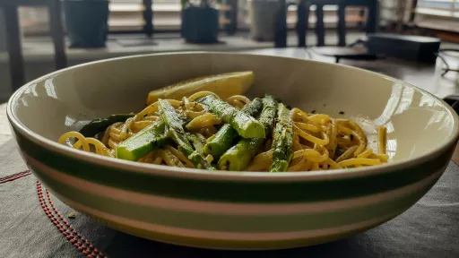

Anchovy and samphire spaghetti

Both samphire and anchovy pack a really salty punch. Combining the two results in a simple little dish which delivers big on flavour.
Servings: 4
Total: 25 mins
Ingredients
- 75 ml , olive oil
- 30 g anchovy fillets in oil, drained and finely chopped (about 8 or 9)
- 1½ tsp Aleppo chilli flakes, plus extra to serve (or use half the amount of regular chilli flakes)
- 1 clove garlic, crushed
- 1 lemon, finely grate the zest to get 1 tsp, then cut into 4 wedges to serve
- 20 g parsley, finely chopped
- 100 ml dry white wine
- 200 g spaghetti
- 250 g samphire
- salt and black pepper
Instructions
- Put the
oil75 ml
into a large saute pan and place on a medium heat. Once hot, add the anchovies30 g
, chilli flakes1½ tsp
, garlic1 clove
, lemon1
zest, half the parsley20 g
and a good grind of pepper. Fry gently for 5 minutes, stirring frequently, until the anchovies30 g
have melted into the oil75 ml
. Pour in the wine100 ml
and cook for 4-5 minutes, until the sauce has thickened and reduced, then remove from the heat and set aside while you cook the pasta.
- Bring a large pot of salted water to the boil and cook the
spaghetti200 g
until al dente. Thirty seconds before the spaghetti200 g
is ready, add the samphire250 g
(to the same pan the pasta is cooking in). Reserve a couple of ladles of the pasta water, then drain the pasta and samphire250 g
. Return the saute pan of sauce to a medium high heat. Add the cooked spaghetti200 g
and samphire250 g
and toss to combine. If you need to loosen, add a little of the reserved pasta water. Stir through the remaining parsley20 g
and another good grind of pepper, then divide between four plates.
- Finish with a sprinkling of the extra Aleppo
chilli flakes1½ tsp
and serve, with a lemon1
wedge on the side.
SIMPLE by Ottolenghi
Short Link
Long Link